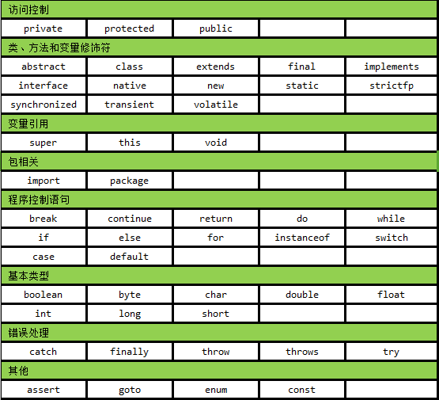

4.Java基础语法
4.1. 注释
注释是用来注解、说明、解释程序的文字，是给编程人员看的，被 Javac（Java 编译器）编译时忽略的部分，可以提高代码的阅读性。还可以屏蔽掉一些暂时不用的语句，等要的时候直接取消注释即可。Java 注释有三种：单行注释、多行注释、文档注释。
对于单行和多行注释，被注释的文字，不会被JVM（java虚拟机）解释执行。
对于文档注释，是java特有的注释，其中注释内容可以被JDK提供的工具 javadoc 所解析，生成一套以网页文件形式体现的该程序的说明文档(说明书)。
注释是一个程序员必须要具有的良好变成习惯，初学者可以先写注释，通过注释将自己的思路整理出来，后写代码去实现功能。
4.2.关键字
Java的关键字也叫保留字，是被Java语言赋予了特殊含义的单词，这些单词Java开发和运行平台都认识，并能正确处理。关键字不能用作变量名、方法名、类名、包名和参数，变量名、方法名、类名、包名和参数这些叫做标识符。也就是说，关键字作为标识符来使用。Java中的关键字有一下这些：

注：
1)关键字const和goto，目前不使用。
2)true, false, null似乎是关键字,但它们实际上字面量，你不能在程序中使用它们作为标识符。
3)main不是关键字，是标识符，但是有点特殊，JVM可以识别。
4.3. 标识符
.标识符是用来给包、类、方法、变量、接口和自定义数据类型命名的。
标识符可以是字母（A-Z或者a-z）,美元符（$）、下划线（_）或数字的任何字符组合，但是不能以数字开头。（在Java编程过程中，虽然编译器支持中文起名，但最好不要用中文，以免带来不必要的麻烦。）
合法标识符举例：age、$salary、_value、_1_value
非法标识符举例：123abc、-salary
关键字不能用作标识符，关键字也不能用作标识符
标识符是大小写敏感的，如果两个标识符字母相同，但是大小写不同的则是两个标识符：aa、aA，这是两个标识符。
在起名字的时候，为了提高阅读性，要尽量有意义。比如说：age、aaa都表示年龄，但是，我们应该都比较喜欢age吧，因为我们一看就知道它是表示年龄的。
在声明标识符的时候，我们要遵循一定的规范：
1) 给包命名时，多个单词组成时，所有的字母都要小写。如：com.dajiangtai。
2) 类名、接口名，一般是由一个或多个单词组成，遵循“驼峰规则”——所有单词的首字母大写。
3) 变量名、函数名：由多单词组成时，第一个单词首字母小写，第二个单词开始每个单词首字母大写，也是遵循“驼峰规则”，也称“小驼峰规则”。如：myFirstName。但如果变量是局部变量，则可以简写。如，i,j。
4) 常量名：所有字母都大写。多单词时每个单词用下划线连接。如：PI，COLOR_RED。